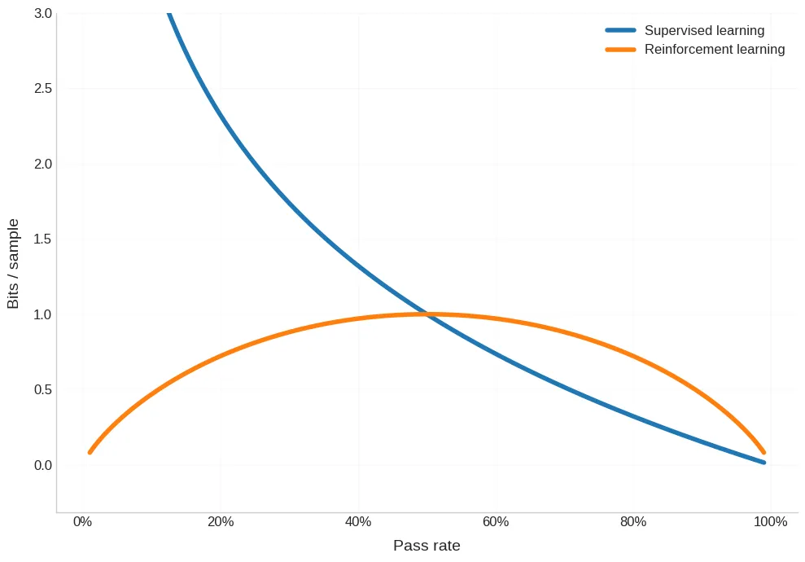

Reinforcement learning (RL) is notoriously inefficient. Compared to supervised learning, it requires vastly more compute, data, and tuning to achieve comparable results.
Most explanations focus on the obvious reason: samples are expensive. In supervised learning, every token gives you a learning signal. In RL, you may need to unroll an entire trajectory, sometimes tens of thousands of tokens long,just to receive a single reward at the end.
But that's only half the story.
Even if RL samples were free, RL would still be fundamentally inefficient. The deeper issue is that most reinforcement learning samples contain very little information.
Credits to Dwarkesh and his podcasts that got me learning about this.
A useful way to think about learning efficiency is:
Most discussions fixate on the first term. This post is about the second.
In supervised learning, the model is told exactly what the correct answer is.
If the model assigns probability p to the correct label before seeing it, then observing the label gives:
This quantity has no upper bound. The more wrong the model is, the more it learns.
Early in training, when the model is nearly random, every token is maximally surprising. Each one delivers a strong, low-variance gradient that says:
"You were wrong in this exact way. Fix these parameters."
This is why pretraining is so sample-efficient: every example is information-dense.
Reinforcement learning works very differently.
The model is not told what the correct answer was. It only observes a binary outcome:
If the probability of success is p, then the reward signal is a Bernoulli random variable. The maximum information you can extract from observing it is its entropy:
This single equation explains a huge fraction of RL's difficulties.
The entropy of a binary outcome has three crucial properties:
This is a fundamental information bottleneck. No algorithm can escape it.
Consider next-token prediction using RL.
For a randomly initialized language model, the probability of sampling the correct token is roughly:
In this regime:
Most RL samples early in training carry almost no information.
This is true even before accounting for long trajectories, delayed rewards, or credit assignment.
If we plot:
we see that supervised learning provides far more information when the model is weak, while RL only becomes competitive near the end of training.

Scaling laws tell us something important:
Equal amounts of compute buy equal multiplicative improvements in performance.
That means training progress should be viewed on a log scale, not a linear one.
When we plot bits per sample against log pass rate, the picture becomes stark:
Low entropy doesn't just reduce signal, it explodes variance.
Early in RL training:
The situation for RL early in training is actually even worse than described above. When the pass rate is low, your gradient estimate is going to be incredibly noisy and unpredictable. Either you don't sample the correct answer at all in your batch, in which case you get almost no information. Or you do, and you get this giant spike. You're getting jerked around, which is terrible for performant training.
Training becomes unstable and unpredictable.
Interestingly, supervised learning has the opposite problem: variance explodes at the end of training, when most remaining loss is irreducible noise. This likely explains why batch sizes increase late in pretraining.
RL works best when the model's pass rate is neither too low nor too high.
This explains several empirical facts:
RL amplifies intelligence once it already exists.
RL reinforces what it samples, not what is best in principle.
Simple heuristics that occasionally work are exponentially more likely to be sampled than complex, general strategies. Once such a heuristic crosses the success threshold, RL rapidly drives it to fixation, even if it doesn't generalize.
Binary rewards cannot reliably distinguish:
This helps explain why models can be world-class on benchmarks yet make shockingly foreseeable mistakes.
Human learning does not primarily come from binary outcomes.
A repeat entrepreneur does not learn only from whether the last startup succeeded. They learn from:
If intelligence were learned purely from success/failure signals, human expertise would be impossible.
Reinforcement learning is hard not just because samples are expensive, but because most RL samples contain almost no information.
This is a fundamental limitation of binary feedback.
If we want RL-style training to scale further, the real question may not be:
How do we squeeze more bits out of rewards?
But instead:
How do we learn from the environment the way humans do, by extracting structure, not just outcomes?